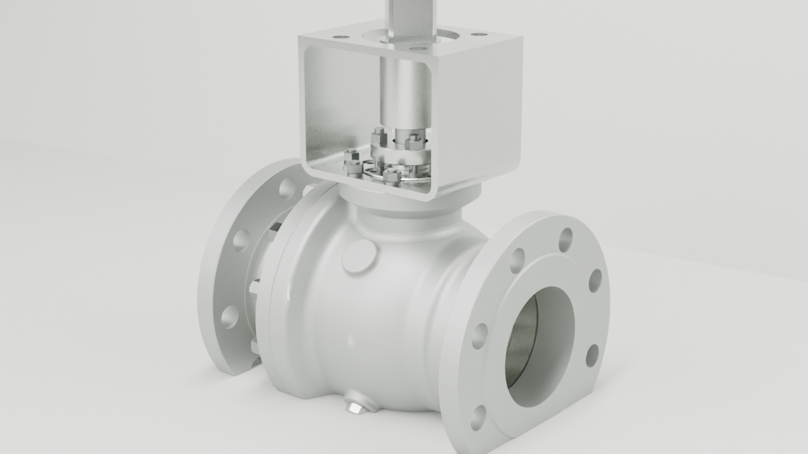
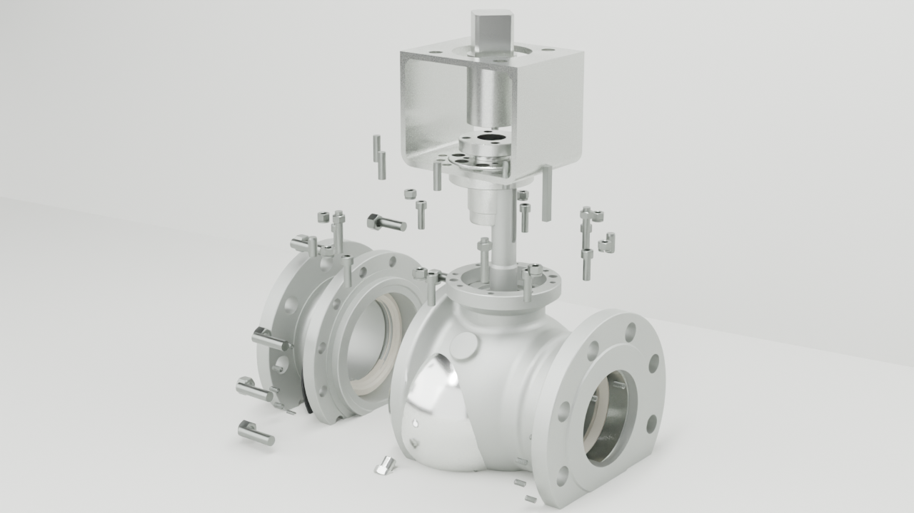
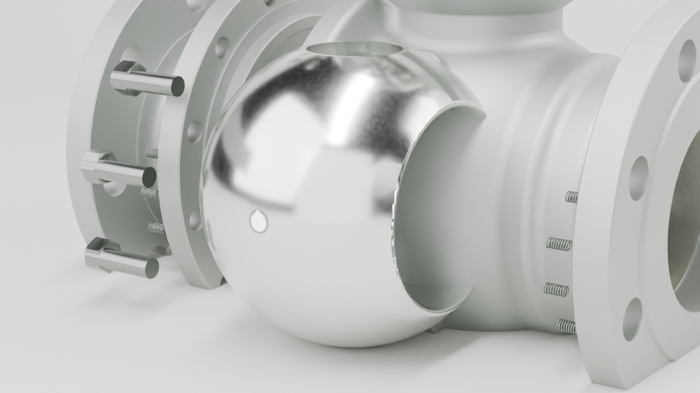
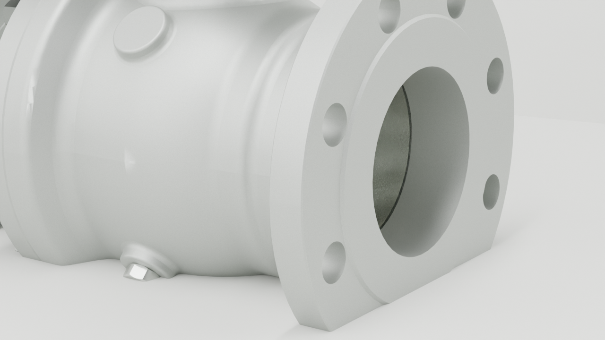
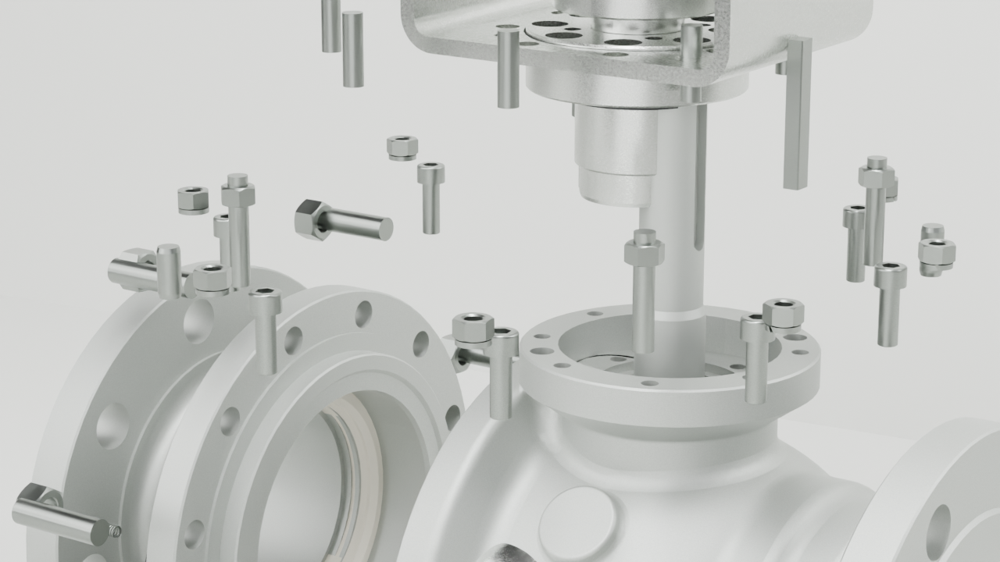

Goal 20 / Blender Cycles / STEP-first proof
固定式球阀离线材质验证
这不是 hero 替换，也不是 240 帧序列；这里只验证 STEP 转换、零件分组、六类工业材质和 Cycles studio lighting 是否成立。
1280x720render size
138STEP mesh instances
6material families
5rendered stills





Manifest: render-manifest.json. Material map: semantic-material-map.json. Mesh: goal20-step-mesh.glb. Status: material-status.md.